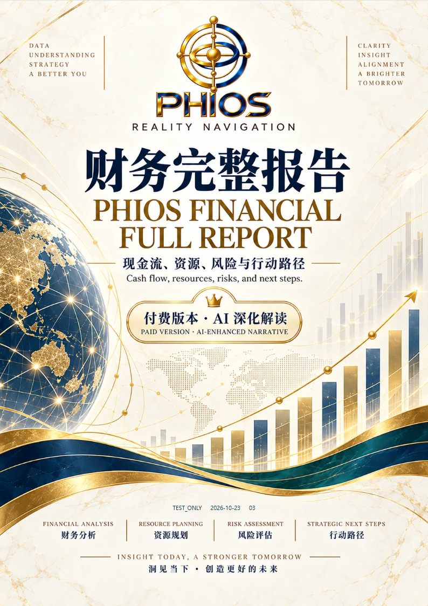
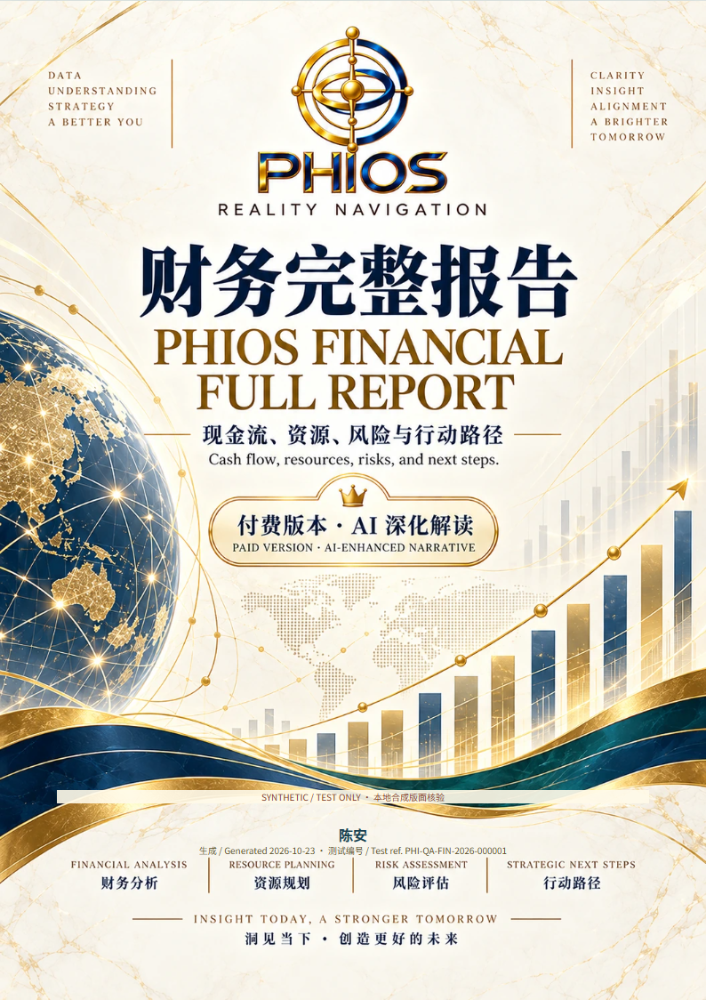
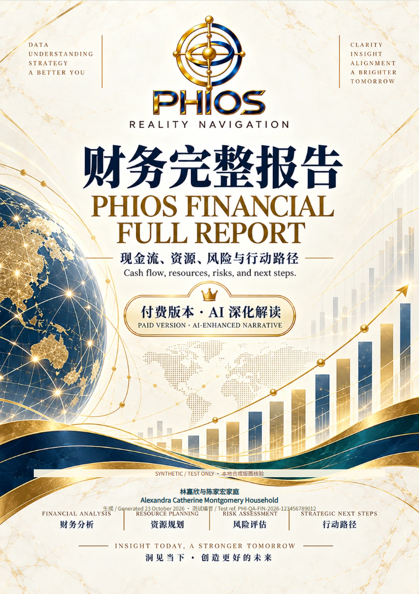
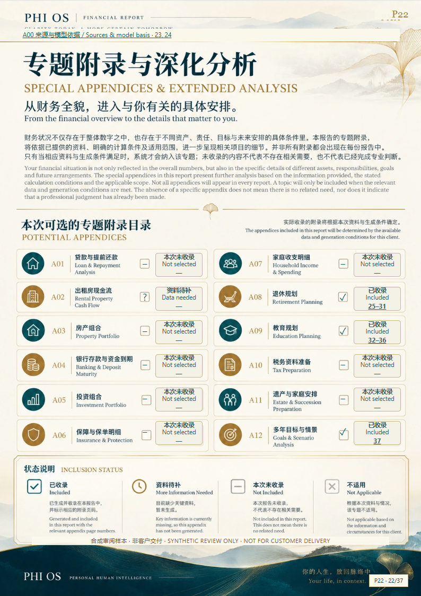
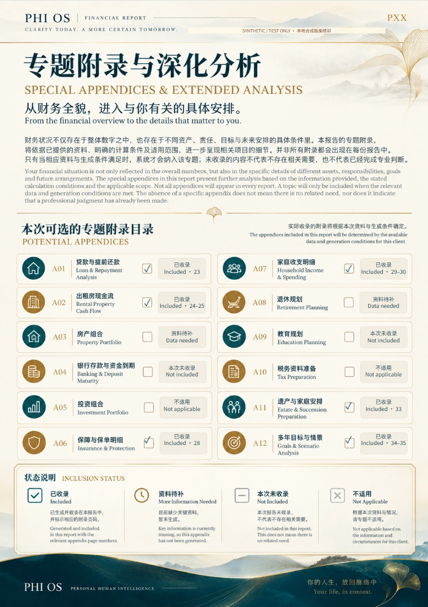
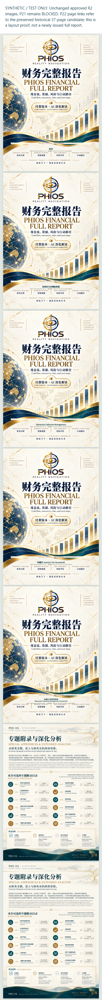

LOCAL SYNTHETIC / TEST ONLY。原图未改。P22 混合状态为合成 fixture，不是 complete 财务事实。完整客户报告 P21 仍 BLOCKED。
A4 对照 PDF（4页） · 五组姓名＋双目录样本（7页） · 12 品类编号证据 · C0–C7 记录
修改前

修改后

修改前
边界样本

修改前（三行及额外符号）

修改后（两行、单 checkbox 填充）


